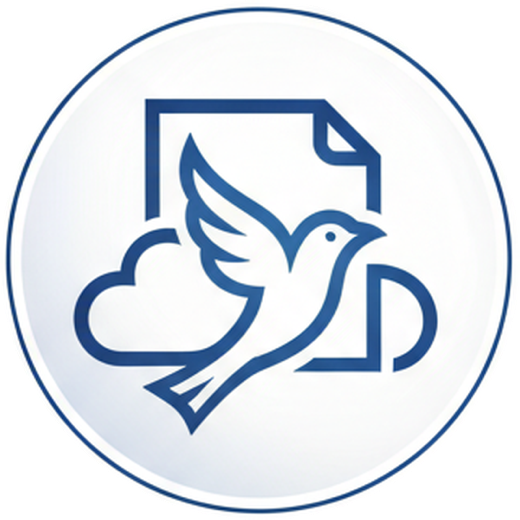

Leerprojecten, software en cybersecurity, van een Brusselse vzw.
Aether EdTech ASBL bouwt gratis leerprojecten en levert diensten voor softwareontwikkeling en cybersecurity aan scholen, verenigingen en bedrijven. De inkomsten uit onze diensten worden herinvesteerd in ons onderwijswerk.
Geregistreerde vzw · KBO 1045.010.593 · Schaarbeek, Brussel

Drie werkdomeinen
Onze leerprojecten zijn gratis. Onze diensten zijn betalend en de inkomsten ondersteunen de projecten.
Leerprojecten
Gratis educatieve websites en tools, ontworpen door leerkrachten. BacMath.eu, een website om wiskunde te leren, is de eerste. Verdere projecten zijn in ontwikkeling.
Software- en cybersecuritydiensten
Softwareontwikkeling, beveiligingsbeoordelingen en training van medewerkers voor scholen, verenigingen en bedrijven. De inkomsten uit onze diensten financieren onze onderwijsprojecten.
Partnerschappen
Wij dragen software, technische expertise en lestijd bij aan onderwijsprojecten van scholen, verenigingen en gemeenschapsorganisaties.
Bescherm de systemen en gegevens waarop uw organisatie steunt
Scholen, verenigingen en kleine bedrijven beheren persoonsgegevens, financiële gegevens en online accounts die beschermd moeten worden. Wij helpen u in kaart te brengen wat u beheert, de belangrijkste risico's te beperken en uw team voor te bereiden op incidenten.
Inventaris van digitale middelen
Een overzicht van uw toestellen, accounts, gegevens en software, en van wie toegang heeft tot elk ervan.
Beveiligingsbeoordelingen
Een controle van uw websites, systemen en configuratie, met een lijst van verbeteringen in volgorde van prioriteit.
Veilige softwareontwikkeling
Software die vanaf het begin wordt ontworpen en gebouwd met beveiligingsvereisten.
Bewustmaking en voorbereiding op incidenten
Training voor medewerkers en een schriftelijk plan om op beveiligingsincidenten te reageren.
BacMath.eu
Een website om wiskunde te leren, met duidelijke uitleg en oefeningen die leerlingen in hun eigen tempo doorlopen.
BacMath.eu is gratis te gebruiken. Het is het eerste van meerdere onderwijsprojecten die in ontwikkeling zijn.
- Duidelijke uitleg en gestructureerde oefeningen
- Gratis voor leerlingen
- Ontworpen door leerkrachten, gebouwd en onderhouden door Aether EdTech
Project
01BacMath.eu · online en gratis te gebruiken
Organisaties die ons werk steunen
Aether EdTech heeft steun ontvangen van de volgende organisaties.
Namen worden als tekst getoond om hun steun te erkennen. Het zijn handelsmerken van hun respectieve eigenaars en deze vermelding impliceert geen goedkeuring van Aether EdTech.
Steun gratis onderwijsprojecten
Giften dekken hosting, ontwikkeling en nieuwe educatieve inhoud. Organisaties kunnen ons ook steunen via sponsoring, tools die in natura ter beschikking worden gesteld of vrijwillige expertise.